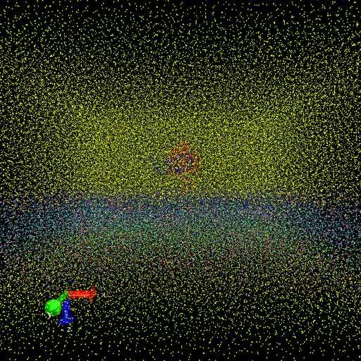

📝 ras-raf-membrane
43/65 (66.2%)
📋 Task Description
Your agent_mode is "mcp", use it when saving results. Your working directory is "/Users/kuangshiai/Documents/ND-VIS/Code/SciVisAgentBench/SciVisAgentBench-tasks/molecular_vis/workflows", and you should have access to it. In the following prompts, we will use relative path with respect to your working path. But remember, when you load or save any file, always stick to absolute path.
1. Please load the Martini coarse-grained simulation file from "ras-raf-membrane/data/ras-raf-membrane.gro" into VMD. The simulations has a membrane and a RAS-RAF protein complex.
2. Use VMD to show a zoomed in side view of the membrane and center on the protein with the protein below the membrane.
For the bilayer only show the PO4 lipids beads and ROH cholesterol bead and color them gray.
Also show the protein back bone beads coloring RAS (resid 2 to 187) red and RAF (resid 188 to 329) blue.
Take a screenshot of the visualization.
3. Analyze the visualization and answer the following questions:
Q1: Are there any cholesterol head groups in the bilayer center? (yes/no)
Q2: How many lipids are there within 1.5 nm of the RAF protein?
A. 0
B. 0-3
C. 3-5
D. >5
4. Save your work:
Save the VMD state as "ras-raf-membrane/results/{agent_mode}/ras-raf-membrane.vmd".
Save the screenshot of the visualization as "ras-raf-membrane/results/{agent_mode}/ras-raf-membrane.png".
Save the answers to the analysis questions in plain text as "ras-raf-membrane/results/{agent_mode}/answers.txt".
🖼️ Visualization Comparison
Ground Truth

Agent Result
Image not available📏 Vision Evaluation Rubrics
📝 Text-Based Q&A Evaluation
📊 Detailed Metrics
Visualization Quality
23/30
Output Generation
5/5
Efficiency
5/10
Completed in 98.45 seconds (very slow)
Text Q&A Score
10/20
50.0%
Input Tokens
23,420
Output Tokens
581
Total Tokens
24,001